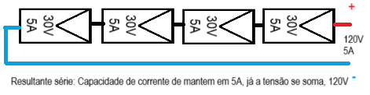
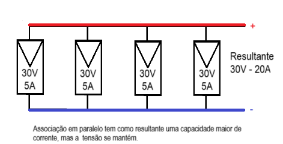

Relações entre grandezas elétricas
1. Primeira Lei de Ohm.
A intensidade de corrente elétrica é diretamente proporcional a tensão e inversamente proporcional a resistência elétrica.
|
|
Neste triangulo temos representadas a unidades de tensão, corrente e resistência. Ou seja, para encontrar o valor da corrente em amperes, observamos a relação entre tensão e resistência ( Volt / ohm), logo, I = V/R, onde "I" é a intensidade de corrente elétrica em ampére (A), "V" é a tensão elétrica em volt (V), e "R" é a resistência elétrica em OHM (Ω). |

A mesma inferência pode ser usada para determinar qualquer das grandezas, ou seja:
Para achar a:
- Tensão: V= I x R;
- Resistência: R =V /I
Exemplo 1: Encontre o valor para um disjuntor, onde seu valor será igual ao da intensidade de corrente elétrica do circuito puramente resistivo, quando a tensão for igual a dez volts e a resistência elétrica for igual a dois ohms.
Valor de disjuntores DIN comerciais: 2A, 3A, 6A, 10A, 16A...
INTENSIDADE DE CORRENTE ELÉTRICA: I = V/R
- V=10V
- R= 2Ω
- I =V/R .... I=10V / 2Ω =5A (CINCO AMPÉRES).
Considerando os valores comerciais apresentados, o disjuntor adequado para este circuito será de 6A.
2. Lei de potência
Outra relação importante no dimensionamento de circuitos elétricos é a relação que existe entre potência elétrica, tensão elétrica e intensidade de corrente elétrica.
|
|
Neste triangulo temos representadas a unidades de tensão, corrente e potência (Consideramos aqui FP=1, logo P=S, sendo indiferente a representação da unidade em VA ou W). Ou seja, para encontrar o valor da corrente em amperes, observamos a relação entre tensão e potência ( watt /volt), logo, I = S (ou P) / V, onde "I" é a intensidade de corrente elétrica em ampére (A), "V" é a tensão elétrica em volt (V), e "P" é a potência elétrica em watt (w). |

A mesma inferência pode ser usada para determinar qualquer das grandezas, ou seja:
Para achar a:
- Tensão: V= P / I ;
- Potência: P =V x I
Exemplo 1: Encontre o valor para um disjuntor, onde seu valor será igual ao da intensidade de corrente elétrica do circuito puramente resistivo, quando a tensão for igual a 10 volts e a potência elétrica for igual a 50 watts.
Valor de disjuntores DIN comerciais: 2A, 3A, 6A, 10A, 16A...
INTENSIDADE DE CORRENTE ELÉTRICA: I = P / V
- V=10V
- P = 50w
- I =P / V .... I=50V / 10V =5A (CINCO AMPÉRES).
Considerando os valores comerciais apresentados, o disjuntor adequado para este circuito será de 6A.
Associações em série

Associações em paralelo.

Resultante de potência
Em ambas associações a potência será determida pela soma da potencia de cada módulo fotovoltaico ou pelo produto entre a tensão e corrente resultante.
S=600VA
OU (considerando FP=1)
P=600W